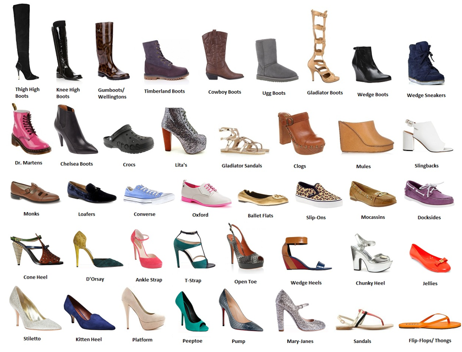
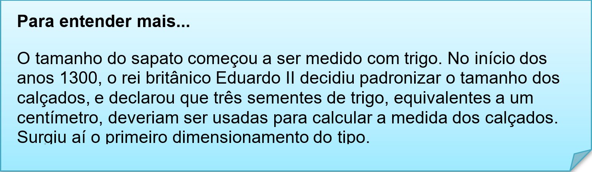
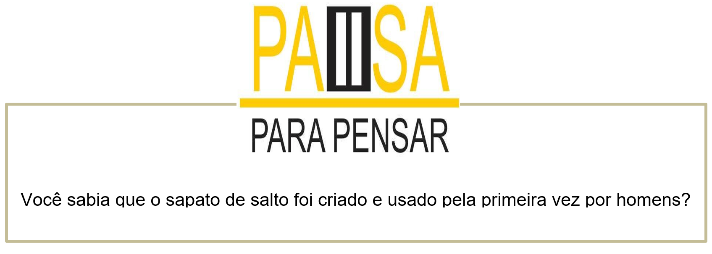

Capítulo 2 - Footwear Sector – Setor Calçadista

Footwear industry
The footwear industry constitutes an important sector of the economy of developing countries for the following reasons. Firstly, footwear may be considered as a basic needs item, following closely, in importance, other items such as food, shelter and clothing. Secondly, the manufacture of footwear uses relatively labour-intensive processes, and thus contributes substantially to employment generation.
O Texto acima nos apresenta informações sobre a indústria calçadista. Nele há elementos da língua inglesa essenciais, como: adjetivos, artigos e verbos. Vamos ver a sua tradução para entender um pouco mais sobre esse setor.
A indústria calçadista constitui um importante setor da economia de desenvolvimento de países entre outras razões. Primeiramente, o calçado pode ser considerado um item básico, seguidos por outros itens como: comida, moradia e roupas. Segundamente, a manufatura calçadista usa relativamente um processo de trabalho intensivo que contribui substantivamente para a geração de empregos.
Contextualizando – Expansão de vocabulário
Vamos observar esse Visual Shoe Dictionary. Nele contém os principais sapatos usados pela sociedade atual.


Assista ao vídeo e conheça toda a história do sapato de uma forma bem divertida, nele você verá até a origem da palavra SHOE, sapato em inglês.
Certamente o sapato mais confortável é o tênis. Hoje temos diversos modelos e com as melhores tecnologias que a indústria tem. Vamos ver os modelos e suas nomenclaturas em inglês.
Cada cultura com o seu sapato!
Alguns dos primeiros sapatos confeccionados pelo homem eram feitos de couro curtido fosse uma superfície ampla ou apenas um cordão que revestia todo o pé. Além de couro de animais, há relatos de ancestrais nossos que utilizavam sapatos fabricados com outros materiais, tais como folhas de plantas específicas — talvez o único sapato na História a durar menos do que alguns tênis chineses, portanto.
Nativos norte-americanos: os mocassins eram fabricados pelos nativos norte-americanos. Eram sapatos simples de couro — que, entretanto, deram origem aos modelos mais modernos que se podem encontrar hoje no shopping mais próximo. Em alguns casos, alguns adornos poderiam ser incluídos.
Reconstruindo conhecimentos – Uso de adjetivos comparativos
Usar o comparativo em inglês é muito simples. As comparações, nesse idioma, são feitas como no português. Ou seja, lembram muito tudo aquilo que você aprendeu quando estudou o grau dos adjetivos na escola. Confira, então, em mais esta lição de gramática, como usar o “comparative of superiority” em inglês. É quase TÃO fácil QUANTO no nosso idioma.
Talvez você ainda não tenha se dado conta mas, no dia a dia, usamos o comparativo para quase tudo. Seja para pedir uma xícara maior de café na cafeteria, ou uma camiseta menor para experimentar na loja… Em inglês, não é diferente. O comparativo é super usado!
O comparativo de superioridade em inglês com adjetivos curtos (1 ou 2 sílabas)
Em português, para indicar superioridade, nós usamos ‘MAIS + adjetivo + QUE’.
Em inglês, para os adjetivos curtos, vamos usar a seguinte fórmula:
adjetivo + -ER + THAN
My cup of coffee is bigger than yours (Minha xícara de café é maior do que a sua)
Se queremos indicar inferioridade em inglês, vamos usar a mesma expressão que usamos no português: ‘MENOS + adjetivo + QUE‘.
LESS + adjetivo + THAN
John is less tall than his brother was at the same age
(John é menos alto que seu irmão quando tinha a mesma idade)
Confira os exemplos:
Veja a seguir algumas frases de exemplo com os adjetivos curtos mais usados no comparativo em inglês:
1. Tall > taller (alto > mais alto)
I am taller than you (Eu sou mais alto(a) que você)
2. Fast > faster (rápido > mais rápido)
Catherine drives faster than her boyfriend (Catherine dirige mais rápido que o namorado dela)
3. Clean > cleaner (limpo > mais limpo)
My car is cleaner than yours (Meu carro está mais limpo que o seu)
Exceções… sim, sempre existem algumas
Fácil, não? Bom, para complicar um pouco, há alguns adjetivos muito usados e que não respeitam essa regra. Mas, como você verá, eles são fáceis de memorizar:
Good > better (bom > melhor)
My mother is a better cook than yours (Minha mãe é melhor cozinheira que a sua)
Bad > worse (mal > pior)
Your accent is worse than mine (Seu sotaque é pior do que o meu)
Far > further (longe> mais longe)
I live further than you from the city centre (Eu vivo mais longe do centro da cidade do que você)
Much/many > More (muito(s) > mais)
He has more skills than his father (Ele tem plus habilidades que seu pai)
Little > less (pouco > menos)
I have less money in my bank account than in my pocket
(Eu tenho menos dinheiro na minha conta do que no meu bolso)
Duas regras para as exceções:
Além disso, no comparativo em inglês, há outras exceções que podemos agrupar nessas duas regras:
Para os adjetivos que terminam em -y, o -y se torna -i :
Happy -> Happier
Busy -> Busier
Children are generally happier than adults > As crianças geralmente são mais felizes que os adultos
Para os adjetivos com uma sílaba que terminam com uma vogal + uma consoante, duplicamos a consoante:
Big –> Bigger
Fat –> Fatter
Thin –> Thinner
The cat is fatter than the dog (O gato é mais gordo que o cachorro)
O comparativo em inglês com adjetivos longos (3 ou mais sílabas)
Para os adjetivos longos, com três ou mais sílabas, a construção do comparativo em inglês é ainda mais parecida com a do português. Podemos traduzir literalmente:
Em português: ‘MAIS + adjetivo + QUE‘ ou ‘MENOS + adjetivo + QUE
Em inglês: ‘MORE + adjetivo + THAN’ ou ‘LESS + adjetivo + THAN’
My shoes are more expensive than yours
(Meus sapatos são mais caros que os seus)
My bag is less expensive than yours (Minha bolsa é menos cara que a sua)
Aplicando ao nosso vocabulário
My shoes are cheaper than yours. (Meus sapatos são mais baratos que os seus)
My flipflops are more beautiful than yours. (Meu chinelos são mais bonitos que o seu.)
My boots are bigger than your. (Minha botas são maiores que as suas.)
My sandals are more expensive than your. (Minhas sandálias são mais caras que as suas.)
My tenis shoes are less expensive than your. (Meus tênias são menos caros que os seus.)
 https://revistamarieclaire.globo.com/Moda/noticia/2015/02/6-fatos-curiosos-sobre-sapatos-que-voce-provavelmente-nao-conhecia.html
O que aprendi
• Nesta unidade aprendemos o vocabulário do setor calçadista e a importância dessa indústria para a economia;
• Aprendemos os tipos de sapatos;
• Observamos as variações dos tênis;
• Conhecemos a história e evolução do sapato;
• Aprendemos a origem da numeração dos sapatos;
• Na gramática, aplicamos os adjetivos de comparação.
Praticando
Leia essa advertisement (propaganda) sobre sapatos. O que diz na frase?
E para qual público ela é voltada? Women or men?
Retorne ao nosso Visual Shoe Dictionary e selecione shoes que você utiliza nos seguintes places (lugares):
At home (em casa)
At work (no trabalho)
At school (na escola)
At gym (na academia)
Observe a imagem e faça frases comparativas

My tenis shoes are more comfortable than yours. > Meus tênis são mais confortáveis que os seus.
___________________________________________________________________________________________
___________________________________________________________________________________________